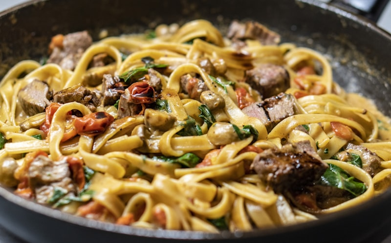
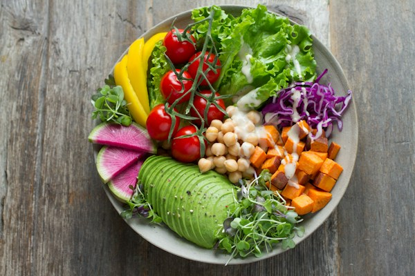
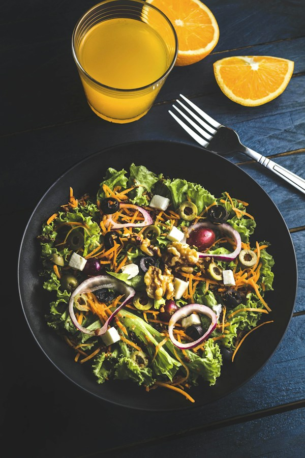
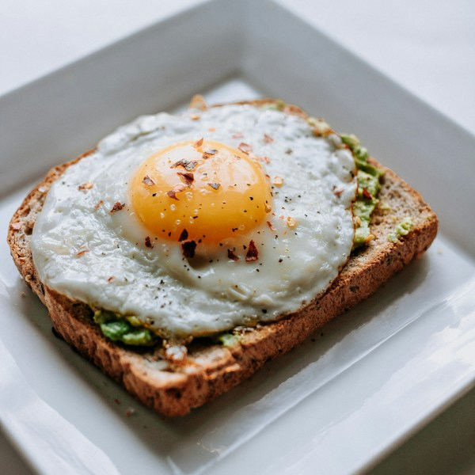
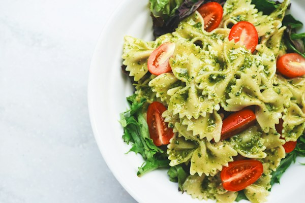

Search hundreds of recipes by name, ingredient, or cuisine.
8 Recipes

Silky parmesan cream with roasted garlic

Fresh vegetables, quinoa, and creamy avocado.

Stone baked pizza topped with mozzarella and basil.

Crispy toast topped with smashed avocado and herbs.
Colorful vegetables served with a lemon dressing.

Stir-fried rice loaded with fresh vegetables.